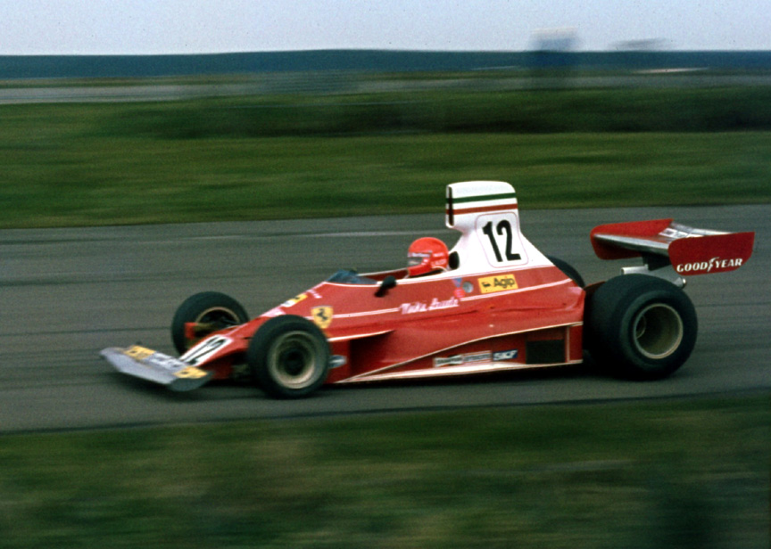

"Don't talk too much, set a goal and achieve it"
These words were spoken by the great Niki Lauda - the three-time Formula 1 champion, who burned with the car in 1976 at the Nurburgring.
Andreas Nikolaus "Niki" Lauda (22 February 1949 – 20 May 2019) was an Austrian Formula One driver and aviation entrepreneur. He was a three-time Formula One World Drivers' Champion, winning in 1975, 1977 and 1984, and is the only driver in Formula One history to have been champion for both Ferrari and McLaren, two of the sport's most successful constructors.
He was an aviation entrepreneur who founded and ran three airlines: Lauda Air, Niki and Lauda. He was also a consultant for Scuderia Ferrari and team manager of the Jaguar Formula One racing team for two years. Afterwards, he worked as a pundit for German TV during Grand Prix weekends and acted as non-executive chairman of Mercedes-AMG Petronas Motorsport, of which Lauda owned 10%.
Lauda emerged as Formula One's star driver amid a 1975 title win and leading the 1976 championship battle. Lauda was seriously injured in a crash at the 1976 German Grand Prix while racing at the Nürburgring; during the crash his Ferrari 312T2 burst into flames nearly resulting in his death after he inhaled hot toxic fumes and suffered severe burns. He survived and recovered sufficiently to race again just six weeks later at the Italian Grand Prix. Although he lost that year's title by just one point to James Hunt, he won his second championship the year after, during his final season at Ferrari. After a couple of years at Brabham and two years' hiatus, Lauda returned and raced four seasons for McLaren between 1982 and 1985, during which he won the 1984 title by half a point over his teammate Alain Prost.
Early years in racing
Niki Lauda was born on 22 February 1949 in Vienna, Austria, to a wealthy paper manufacturing family. His paternal grandfather was the Viennese-born industrialist Hans Lauda.
Lauda became a racing driver despite his family's disapproval. After starting out with a Mini, Lauda moved on into Formula Vee, as was normal in Central Europe, but rapidly moved up to drive in private Porsche and Chevron sports cars. With his career stalled, he took out a £30,000 bank loan, secured by a life insurance policy, to buy his way into the fledgling March team as a Formula Two driver in 1971. Because of his family's disapproval, he had an ongoing feud with them over his racing ambitions and abandoned further contact.
Lauda was quickly promoted to the Formula One team but drove for March in Formula One and Formula Two in 1972. Although the latter cars were good and Lauda's driving skills impressed March principal Robin Herd, March's 1972 Formula One season was catastrophic. Perhaps the lowest point of the team's season came at the Canadian Grand Prix at Mosport Park, where both March cars were disqualified within three laps of each other, just past three-quarter of the race distance. Lauda took out another bank loan to buy his way into the BRM team in 1973. Lauda was instantly quick, but the team was in decline; although the BRM P160E was fast and easy to drive it was not reliable and its engine lacked power. Lauda's popularity was on the rise after he finished third at the Monaco Grand Prix that year, resulting in Enzo Ferrari becoming interested. When his BRM teammate Clay Regazzoni left to rejoin Ferrari in 1974, team owner Enzo Ferrari asked him what he thought of Lauda. Regazzoni spoke so favorably of Lauda that Ferrari promptly signed him, paying him enough to clear his debts.
Ferrari (1974–1977)
After an unsuccessful start to the 1970s, culminating in a disastrous start to the 1973 season, Ferrari regrouped completely under Luca di Montezemolo and were resurgent in 1974. The team's faith in the little-known Lauda was quickly rewarded by a second-place finish in his debut race for the team, the season-opening Argentine Grand Prix. His first Grand Prix (GP) victory – and the first for Ferrari since 1972 – followed only three races later in the Spanish Grand Prix. Although Lauda became the season's pacesetter, achieving six consecutive pole positions, a mixture of inexperience and mechanical unreliability meant Lauda won only one more race that year, the Dutch GP. He finished fourth in the Drivers' Championship and demonstrated immense commitment to testing and improving the car.
The 1975 Formula One season started slowly for Lauda; after no better than a fifth-place finish in the first four races, he won four of the next five driving the new Ferrari 312T. His first World Championship was confirmed with a third-place finish at the Italian Grand Prix at Monza; Lauda's teammate Regazzoni won the race and Ferrari clinched their first Constructors' Championship in 11 years. Lauda then picked up a fifth win at the last race of the year, the United States GP at Watkins Glen. He also became the first driver to lap the Nürburgring Nordschleife in under seven minutes, which was considered a huge feat as the Nordschleife section of the Nürburgring was two miles longer than it is today. Lauda did not win the German Grand Prix from pole position there that year; after battling hard with Patrick Depailler for the lead for the first half of the race, Lauda led for the first 9 laps but suffered a puncture at the Wippermann, 9 miles into the 10th lap and was passed by Carlos Reutemann, James Hunt, Tom Pryce and Jacques Laffite; Lauda made it back to the pits with a damaged front wing and a destroyed left front tyre. The Ferrari pit changed the destroyed tyre and Lauda managed to make it to the podium in 3rd behind Reutemann and Laffite after Hunt retired and Pryce had to slow down because of a fuel leak. Lauda was known for giving away any trophies he won to his local garage in exchange for his car to be washed and serviced.
Unlike 1975 and despite tensions between Lauda and Montezemolo's successor, Daniele Audetto, Lauda dominated the start of the 1976 Formula One season, winning four of the first six races and finishing second in the other two. By the time of his fifth win of the year at the British GP, he had more than double the points of his closest challengers Jody Scheckter and James Hunt, and a second consecutive World Championship appeared a formality. It was a feat not achieved since Jack Brabham's victories in 1959 and 1960. He also looked set to win the most races in a season, a record held by the late Jim Clark since 1963.
1976 Nürburgring crash
A week before the 1976 German Grand Prix at the Nürburgring, even though he was the fastest driver on that circuit at the time, Lauda urged his fellow drivers to boycott the race, largely because of the 23-kilometre (14 mi) circuit's safety arrangements, citing the organisers' lack of resources to properly manage such a huge circuit, including lack of fire marshals, fire and safety equipment and safety vehicles. Formula One was quite dangerous at the time (three of the drivers that day later died in Formula One incidents: Tom Pryce in 1977; Ronnie Peterson in 1978; and Patrick Depailler in 1980), but a majority of the drivers voted against the boycott and the race went ahead.
On 1 August 1976, during the second lap at the very fast left kink before Bergwerk, Lauda was involved in an accident where his Ferrari swerved off the track, hit an embankment, burst into flames, and made contact with Brett Lunger's Surtees-Ford car. Unlike Lunger, Lauda was trapped in the wreckage. Drivers Arturo Merzario, Lunger, Guy Edwards, and Harald Ertl arrived at the scene a few moments later, but before Merzario was able to pull Lauda from his car, he suffered severe burns to his head and hands and inhaled hot toxic gases that damaged his lungs and blood. In an interview with BBC Radio 5 Live ("I Was There -- May 21, 2019"; "Niki Lauda speaks in 2015"), Lauda said, "...there were basically two or three drivers trying to get me out of the car, but one was Arturo Merzario, the Italian guy, who also had to stop there at the scene, because I blocked the road; and he really came into the car himself, and uh, triggered my, my seatbelt loose, and then pulled me out. It was unbelievable, how he could do that, and I met him afterwards, and I said, 'How could you do it?!'. He said, 'Honestly, I do not know, but to open your seatbelt was so difficult, because you were pushing so hard against it, and when it was open, I got you out of the car like a feather...'." As Lauda was wearing a modified helmet, it didn't fit him properly; the foam had compressed and it slid off his head after the accident, leaving his face exposed to the fire. Although Lauda was conscious and able to stand immediately after the accident, he later lapsed into a coma. While in hospital he was given the last rites, but he survived. Read more about Niki Lauda...